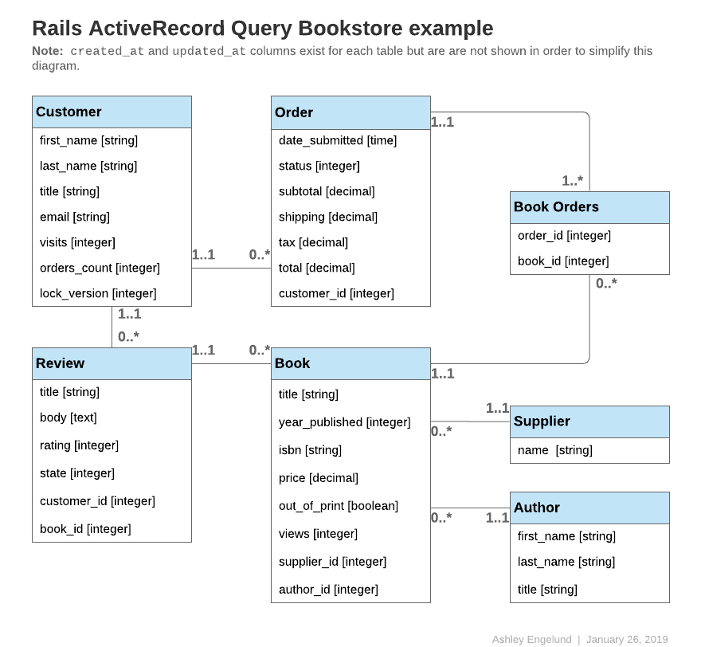

1 Active Record 查詢介面是什麼？
如果您習慣於使用原始 SQL 查詢資料庫記錄，那麼您通常會發現在 Rails 中有更好的方法來執行相同的操作。 Active Record 使您無需在大多數情況下使用 SQL。
Active Record 將為您執行資料庫查詢，相容大多數資料庫系統，包括 MySQL、MariaDB、PostgreSQL 和 SQLite。無論您使用哪種資料庫系統，Active Record 方法格式將始終相同。
本指南中的程式碼示例將引用以下一個或多個 models：
提示：以下所有 models 都使用 id 作為主 key，除非另有說明。
class Author < ApplicationRecord
has_many :books, -> { order(year_published: :desc) }
end
class Book < ApplicationRecord
belongs_to :supplier
belongs_to :author
has_many :reviews
has_and_belongs_to_many :orders, join_table: 'books_orders'
scope :in_print, -> { where(out_of_print: false) }
scope :out_of_print, -> { where(out_of_print: true) }
scope :old, -> { where('year_published < ?', 50.years.ago )}
scope :out_of_print_and_expensive, -> { out_of_print.where('price > 500') }
scope :costs_more_than, ->(amount) { where('price > ?', amount) }
end
class Customer < ApplicationRecord
has_many :orders
has_many :reviews
end
class Order < ApplicationRecord
belongs_to :customer
has_and_belongs_to_many :books, join_table: 'books_orders'
enum :status, [:shipped, :being_packed, :complete, :cancelled]
scope :created_before, ->(time) { where('created_at < ?', time) }
end
class Review < ApplicationRecord
belongs_to :customer
belongs_to :book
enum :state, [:not_reviewed, :published, :hidden]
end
class Supplier < ApplicationRecord
has_many :books
has_many :authors, through: :books
end

2 從資料庫中檢索物件
為了從資料庫中檢索物件，Active Record 提供了幾種查詢器方法。每個 finder 方法都允許您將引數傳遞給它，以便在不編寫原始 SQL 的情況下對資料庫執行某些查詢。
方法是：
annotatefindcreate_withdistincteager_loadextendingextract_associatedfromgrouphavingincludesjoinsleft_outer_joinslimitlocknoneoffsetoptimizer_hintsorderpreloadreadonlyreferencesreorderreselectreverse_orderselectwhere
返回集合的 Finder 方法，例如 where 和 group，返回 ActiveRecord::Relation 的實例。查詢單個實體的方法，例如 find 和 first，返回 model 的單個實例。
Model.find(options) 的主要操作可以概括為：
- 將提供的選項轉換為等效的 SQL 查詢。
- 觸發 SQL 查詢並從資料庫中檢索相應的結果。
- 為每個結果行實例化相應 model 的等效 Ruby 物件。
- 執行
after_find然後after_initializecallbacks，如果有的話。
2.1 檢索單個物件
Active Record 提供了幾種不同的檢索單個物件的方法。
2.1.1 find
使用 find 方法，您可以檢索與指定的 primary key 對應的物件，該物件與任何提供的選項匹配。例如：
# 找到主 key (id) 10 的客戶。
irb> customer = Customer.find(10)
=> #<Customer id: 10, first_name: "Ryan">
上面的 SQL 等價物是：
SELECT * FROM customers WHERE (customers.id = 10) LIMIT 1
如果沒有找到匹配的記錄，find 方法將引發 ActiveRecord::RecordNotFound 異常。
您也可以使用此方法查詢多個物件。呼叫 find 方法並傳入一個主要的 keys 陣列。返回將是一個數組，其中包含提供的 primary keys 的所有匹配記錄。例如：
# 找到主 keys 1 和 10 的客戶。
irb> customers = Customer.find([1, 10]) # OR Customer.find(1, 10)
=> [#<Customer id: 1, first_name: "Lifo">, #<Customer id: 10, first_name: "Ryan">]
上面的 SQL 等價物是：
SELECT * FROM customers WHERE (customers.id IN (1,10))
警告： find 方法將引發 ActiveRecord::RecordNotFound 異常，除非為提供的主要 keys 的 all 找到匹配記錄。
2.1.2 take
take 方法在沒有任何隱式排序的情況下檢索記錄。例如：
irb> customer = Customer.take
=> #<Customer id: 1, first_name: "Lifo">
上面的 SQL 等價物是：
SELECT * FROM customers LIMIT 1
如果沒有找到記錄並且不會引發異常，則 take 方法返回 nil。
您可以將數字引數傳遞給 take 方法以返回最多該數量的結果。例如
irb> customers = Customer.take(2)
=> [#<Customer id: 1, first_name: "Lifo">, #<Customer id: 220, first_name: "Sara">]
上面的 SQL 等價物是：
SELECT * FROM customers LIMIT 2
take! 方法的行為與 take 完全相同，不同之處在於如果沒有找到匹配的記錄，它將引發 ActiveRecord::RecordNotFound。
提示：檢索到的記錄可能因資料庫引擎而異。
2.1.3 first
first 方法查詢按主 key（預設）排序的第一條記錄。例如：
irb> customer = Customer.first
=> #<Customer id: 1, first_name: "Lifo">
上面的 SQL 等價物是：
SELECT * FROM customers ORDER BY customers.id ASC LIMIT 1
如果沒有找到匹配的記錄並且不會引發異常，則 first 方法返回 nil。
如果您的 預設範圍 包含 order 方法，則 first 將根據此排序返回第一條記錄。
您可以將數字引數傳遞給 first 方法以返回最多該數量的結果。例如
irb> customers = Customer.first(3)
=> [#<Customer id: 1, first_name: "Lifo">, #<Customer id: 2, first_name: "Fifo">, #<Customer id: 3, first_name: "Filo">]
上面的 SQL 等價物是：
SELECT * FROM customers ORDER BY customers.id ASC LIMIT 3
在使用 order 排序的集合上，first 將返回按 order 的指定屬性排序的第一條記錄。
irb> customer = Customer.order(:first_name).first
=> #<Customer id: 2, first_name: "Fifo">
上面的 SQL 等價物是：
SELECT * FROM customers ORDER BY customers.first_name ASC LIMIT 1
first! 方法的行為與 first 完全相同，不同之處在於如果沒有找到匹配的記錄，它將引發 ActiveRecord::RecordNotFound。
2.1.4 last
last 方法查詢按主 key（預設）排序的最後一條記錄。例如：
irb> customer = Customer.last
=> #<Customer id: 221, first_name: "Russel">
上面的 SQL 等價物是：
SELECT * FROM customers ORDER BY customers.id DESC LIMIT 1
如果沒有找到匹配的記錄並且不會引發異常，則 last 方法返回 nil。
如果您的 預設範圍 包含 order 方法，則 last 將根據此排序返回最後一條記錄。
您可以將數字引數傳遞給 last 方法以返回最多該數量的結果。例如
irb> customers = Customer.last(3)
=> [#<Customer id: 219, first_name: "James">, #<Customer id: 220, first_name: "Sara">, #<Customer id: 221, first_name: "Russel">]
上面的 SQL 等價物是：
SELECT * FROM customers ORDER BY customers.id DESC LIMIT 3
在使用 order 排序的集合上，last 將返回按 order 的指定屬性排序的最後一條記錄。
irb> customer = Customer.order(:first_name).last
=> #<Customer id: 220, first_name: "Sara">
上面的 SQL 等價物是：
SELECT * FROM customers ORDER BY customers.first_name DESC LIMIT 1
last! 方法的行為與 last 完全相同，不同之處在於如果沒有找到匹配的記錄，它將引發 ActiveRecord::RecordNotFound。
2.1.5 find_by
find_by 方法查詢匹配某些條件的第一條記錄。例如：
irb> Customer.find_by first_name: 'Lifo'
=> #<Customer id: 1, first_name: "Lifo">
irb> Customer.find_by first_name: 'Jon'
=> nil
相當於寫：
Customer.where(first_name: 'Lifo').take
上面的 SQL 等價物是：
SELECT * FROM customers WHERE (customers.first_name = 'Lifo') LIMIT 1
find_by! 方法的行為與 find_by 完全相同，不同之處在於如果沒有找到匹配的記錄，它將引發 ActiveRecord::RecordNotFound。例如：
irb> Customer.find_by! first_name: 'does not exist'
ActiveRecord::RecordNotFound
這相當於寫：
Customer.where(first_name: 'does not exist').take!
2.2 批次檢索多個物件
我們經常需要遍歷大量記錄，例如當我們向大量客戶傳送時事通訊時，或者當我們匯出資料時。
這可能看起來很簡單：
# 如果表很大，這可能會消耗太多記憶體。
Customer.all.each do |customer|
NewsMailer.weekly(customer).deliver_now
end
但是隨著表大小的增加，這種方法變得越來越不切實際，因為 Customer.all.each 指示 Active Record 一次獲取整個表，每行構建一個 model 物件，然後將整個 model 物件陣列儲存在記憶體中。事實上，如果我們有大量的記錄，整個集合可能會超過可用的記憶體量。
Rails 提供了兩種方法來解決這個問題，將記錄分成記憶體友好的批次進行處理。第一種方法 find_each 檢索一批記錄，然後將 each 記錄作為模型單獨生成到塊中。第二種方法，find_in_batches，檢索一批記錄，然後將整個批次作為 models 的陣列生成到塊中。
提示： find_each 和 find_in_batches 方法旨在用於批次處理無法一次性全部放入記憶體的大量記錄。如果您只需要迴圈超過一千條記錄，則正常查詢方法是首選選項。
2.2.1 find_each
find_each 方法批次檢索記錄，然後將 each 1 生成給塊。在以下示例中，find_each 以 1000 個為批次檢索客戶，並將它們一個一個地交給塊：
Customer.find_each do |customer|
NewsMailer.weekly(customer).deliver_now
end
重複此過程，根據需要獲取更多批次，直到處理完所有記錄。
find_each 適用於 model 類，如上所示，也適用於關係：
Customer.where(weekly_subscriber: true).find_each do |customer|
NewsMailer.weekly(customer).deliver_now
end
只要他們沒有排序，因為該方法需要強制排序 在內部進行迭代。
如果接收方中存在訂單，則行為取決於標誌
config.active_record.error_on_ignored_order。如果為真，則 ArgumentError 為
引發，否則該命令將被忽略併發出警告，這是
預設。這可以用選項 :error_on_ignore 覆蓋，解釋
以下。
2.2.1.1 find_each 的選項
:batch_size
:batch_size 選項允許您在單獨傳遞到塊之前指定要在每個批次中檢索的記錄數。例如，要分批檢索 5000 條記錄：
Customer.find_each(batch_size: 5000) do |customer|
NewsMailer.weekly(customer).deliver_now
end
:start
預設情況下，記錄按主 key 的升序獲取。 :start 選項允許您在最低 ID 不是您需要的 ID 時配置序列的第一個 ID。這將很有用，例如，如果您想恢復中斷的批處理，前提是您將上次處理的 ID 儲存為檢查點。
例如，要僅向主 key 從 2000 年開始的客戶傳送時事通訊：
Customer.find_each(start: 2000) do |customer|
NewsMailer.weekly(customer).deliver_now
end
:finish
與 :start 選項類似，:finish 允許您在最高 ID 不是您需要的時配置序列的最後一個 ID。
這將很有用，例如，如果您想使用基於 :start 和 :finish 的記錄子集執行批處理。
例如，要僅向主 key 從 2000 到 10000 的客戶傳送時事通訊：
Customer.find_each(start: 2000, finish: 10000) do |customer|
NewsMailer.weekly(customer).deliver_now
end
另一個例子是，如果您希望多個工作人員處理相同的
處理佇列。您可以透過設定每個工人處理 10000 條記錄
每個工人的適當 :start 和 :finish 選項。
:error_on_ignore
覆蓋應用程式配置以指定在出現錯誤時是否應引發錯誤 關係中存在順序。
2.2.2 find_in_batches
find_in_batches 方法與 find_each 類似，因為兩者都檢索批記錄。不同之處在於 find_in_batches 將 batches 作為 models 的陣列生成給塊，而不是單獨生成。以下示例將一次向提供的塊提供最多 1000 個客戶的陣列，最後一個塊包含任何剩餘的客戶：
# 一次給 add_customers 一個包含 1000 個客戶的陣列。
Customer.find_in_batches do |customers|
export.add_customers(customers)
end
find_in_batches 適用於 model 類，如上所示，也適用於關係：
# 一次給 add_customers 一個包含 1000 個最近活躍客戶的陣列。
Customer.recently_active.find_in_batches do |customers|
export.add_customers(customers)
end
只要他們沒有排序，因為該方法需要強制排序 在內部進行迭代。
2.2.2.1 find_in_batches 的選項
find_in_batches 方法接受與 find_each 相同的選項：
:batch_size
就像 find_each 一樣，batch_size 確定將在每個組中檢索多少記錄。例如，檢索 2500 條記錄的批次可以指定為：
Customer.find_in_batches(batch_size: 2500) do |customers|
export.add_customers(customers)
end
:start
start 選項允許指定將從中選擇記錄的起始 ID。如前所述，預設情況下，記錄是按主 key 的升序獲取的。例如，要批次檢索從 ID: 5000 開始的客戶，共 2500 條記錄，可以使用以下程式碼：
Customer.find_in_batches(batch_size: 2500, start: 5000) do |customers|
export.add_customers(customers)
end
:finish
finish 選項允許指定要檢索的記錄的結束 ID。下面的程式碼展示了批次檢索客戶的情況，直到ID為7000的客戶：
Customer.find_in_batches(finish: 7000) do |customers|
export.add_customers(customers)
end
:error_on_ignore
error_on_ignore 選項覆蓋應用程式配置以指定當關係中存在特定順序時是否應引發錯誤。
3 條件
where 方法允許您指定條件來限制返回的記錄，代表 SQL 語句的 WHERE 部分。條件可以指定為字串、陣列或雜湊。
3.1 純字串條件
如果你想在你的發現中新增條件，你可以在那裡指定它們，就像 Book.where("title = 'Introduction to Algorithms'") 一樣。這將找到 title 欄位 value 是“演算法簡介”的所有書籍。
警告：將您自己的條件構建為純字串可能會使您容易受到 SQL 注入攻擊。例如，Book.where("title LIKE '%#{params[:title]}%'") 是不安全的。有關使用陣列處理條件的首選方法，請參閱下一節。
3.2 陣列條件
現在，如果這個標題可能會有所不同，比如從某個地方說出來的論點呢？查詢結果將採用以下形式：
Book.where("title = ?", params[:title])
Active Record 將第一個引數作為條件字串，任何其他引數將替換其中的問號 (?)。
如果要指定多個條件：
Book.where("title = ? AND out_of_print = ?", params[:title], false)
在此示例中，第一個問號將替換為 params[:title] 中的 value，第二個問號將替換為 false 的 SQL 表示，這取決於介面卡。
此程式碼是非常可取的：
Book.where("title = ?", params[:title])
到這個程式碼：
Book.where("title = #{params[:title]}")
因為論證安全。將變數直接放入條件字串中會將變數按原樣傳遞給資料庫。這意味著它將是直接來自可能具有惡意意圖的使用者的未轉義變數。如果你這樣做，你的整個資料庫就會處於危險之中，因為一旦使用者發現他們可以利用你的資料庫，他們幾乎可以對它做任何事情。永遠不要將引數直接放在條件字串中。
提示：有關 SQL 注入危險的更多資訊，請參閱 Ruby on Rails 安全指南。
3.2.1 佔位符條件
類似於引數的 (?) 替換樣式，您還可以在條件字串中指定 keys 以及相應的 keys/values 雜湊：
Book.where("created_at >= :start_date AND created_at <= :end_date",
{start_date: params[:start_date], end_date: params[:end_date]})
如果您有大量可變條件，這將使可讀性更清晰。
3.3 雜湊條件
Active Record 還允許您傳入雜湊條件，這可以提高條件語法的可讀性。使用雜湊條件，您可以傳入一個包含您想要限定的欄位的 keys 和您想要如何限定它們的 values 的雜湊：
雜湊條件只能進行相等、範圍和子集檢查。
3.3.1 相等條件
Book.where(out_of_print: true)
這將生成如下 SQL：
SELECT * FROM books WHERE (books.out_of_print = 1)
欄位名稱也可以是字串：
Book.where('out_of_print' => true)
在屬於關聯關係的情況下，如果使用 Active Record 物件作為 value，則可以使用 association key 來指定 model。此方法也適用於多型關係。
author = Author.first
Book.where(author: author)
Author.joins(:books).where(books: { author: author })
3.3.2 範圍條件
Book.where(created_at: (Time.now.midnight - 1.day)..Time.now.midnight)
這將使用 BETWEEN SQL 語句查詢昨天建立的所有書籍：
SELECT * FROM books WHERE (books.created_at BETWEEN '2008-12-21 00:00:00' AND '2008-12-22 00:00:00')
這演示了 陣列條件 中示例的較短語法
3.3.3 子集條件
如果要使用 IN 表示式查詢記錄，可以將陣列傳遞給條件雜湊：
Customer.where(orders_count: [1,3,5])
此程式碼將生成如下 SQL：
SELECT * FROM customers WHERE (customers.orders_count IN (1,3,5))
3.4 NOT 條件
NOT SQL 查詢可以透過 where.not 構建：
Customer.where.not(orders_count: [1,3,5])
換句話說，這個查詢可以透過不帶引數呼叫 where 來生成，然後立即與 not 連結並傳遞 where 條件。這將生成如下 SQL：
SELECT * FROM customers WHERE (customers.orders_count NOT IN (1,3,5))
3.5 OR 條件
兩個關係之間的OR條件可以透過在第一個呼叫or來建立
關係，並將第二個作為引數傳遞。
Customer.where(last_name: 'Smith').or(Customer.where(orders_count: [1,3,5]))
SELECT * FROM customers WHERE (customers.last_name = 'Smith' OR customers.orders_count IN (1,3,5))
3.6 AND 條件
AND 條件可以透過連結 where 條件來構建。
Customer.where(last_name: 'Smith').where(orders_count: [1,3,5]))
SELECT * FROM customers WHERE customers.last_name = 'Smith' AND customers.orders_count IN (1,3,5)
AND 關係之間的邏輯交集條件可以透過
在第一個關係上呼叫 and，並將第二個作為
爭論。
Customer.where(id: [1, 2]).and(Customer.where(id: [2, 3]))
SELECT * FROM customers WHERE (customers.id IN (1, 2) AND customers.id IN (2, 3))
4 訂購
要以特定順序從資料庫中檢索記錄，您可以使用 order 方法。
例如，如果您正在獲取一組記錄並希望按表中的 created_at 欄位以升序對它們進行排序：
Book.order(:created_at)
＃ 或者
Book.order("created_at")
您也可以指定 ASC 或 DESC：
Book.order(created_at: :desc)
＃ 或者
Book.order(created_at: :asc)
＃ 或者
Book.order("created_at DESC")
＃ 或者
Book.order("created_at ASC")
或按多個欄位排序：
Book.order(title: :asc, created_at: :desc)
＃ 或者
Book.order(:title, created_at: :desc)
＃ 或者
Book.order("title ASC, created_at DESC")
＃ 或者
Book.order("title ASC", "created_at DESC")
如果您想多次呼叫 order，後續的訂單將附加到第一個：
irb> Book.order("title ASC").order("created_at DESC")
SELECT * FROM books ORDER BY title ASC, created_at DESC
警告：在大多數資料庫系統中，使用 select、pluck 和 ids 等方法從結果集中選擇帶有 distinct 的欄位；除非在 order 子句中使用的欄位包含在選擇列表中，否則 order 方法將引發 ActiveRecord::StatementInvalid 異常。請參閱下一節以從結果集中選擇欄位。
5 選擇特定欄位
預設情況下，Model.find 使用 select * 從結果集中選擇所有欄位。
要僅從結果集中選擇欄位的子集，您可以透過 select 方法指定子集。
例如，僅選擇 isbn 和 out_of_print 列：
Book.select(:isbn, :out_of_print)
＃ 或者
Book.select("isbn, out_of_print")
此 find 呼叫使用的 SQL 查詢將類似於：
SELECT isbn, out_of_print FROM books
請小心，因為這也意味著您正在使用您選擇的欄位初始化 model 物件。如果您嘗試訪問不在初始化記錄中的欄位，您將收到：
ActiveModel::MissingAttributeError: missing attribute: <attribute>
其中 <attribute> 是您要求的屬性。 id 方法不會提高 ActiveRecord::MissingAttributeError，所以在使用 associations 時要小心，因為它們需要 id 方法才能正常執行。
如果您只想獲取某個欄位中每個唯一的 value 的單個記錄，您可以使用 distinct:
Customer.select(:last_name).distinct
這將生成如下 SQL：
SELECT DISTINCT last_name FROM customers
您還可以刪除唯一性約束：
# 返回唯一的姓氏
query = Customer.select(:last_name).distinct
# 返回所有姓氏，即使有重複
query.distinct(false)
6 限制和偏移
要將 LIMIT 應用於由 Model.find 觸發的 SQL，您可以在關係上使用 limit 和 offset 方法指定 LIMIT。
您可以使用 limit 指定要檢索的記錄數，並使用 offset 指定開始返回記錄之前要跳過的記錄數。例如
Customer.limit(5)
將返回最多 5 個客戶，因為它沒有指定偏移量，它將返回表中的前 5 個。它執行的 SQL 如下所示：
SELECT * FROM customers LIMIT 5
將 offset 新增到其中
Customer.limit(5).offset(30)
從 31 日開始，最多返回 5 位客戶。 SQL 看起來像：
SELECT * FROM customers LIMIT 5 OFFSET 30
7 團體
要將 GROUP BY 子句應用於查詢器觸發的 SQL，您可以使用 group 方法。
例如，如果您想查詢訂單建立日期的集合：
Order.select("created_at").group("created_at")
這將為您在資料庫中有訂單的每個日期提供一個 Order 物件。
將要執行的 SQL 將是這樣的：
SELECT created_at
FROM orders
GROUP BY created_at
7.1 分組專案總數
要獲取單個查詢的分組專案總數，請在 group 之後呼叫 count。
irb> Order.group(:status).count
=> {"being_packed"=>7, "shipped"=>12}
將要執行的 SQL 將是這樣的：
SELECT COUNT (*) AS count_all, status AS status
FROM orders
GROUP BY status
8 擁有
SQL 使用 HAVING 子句在 GROUP BY 欄位上指定條件。您可以透過將 having 方法新增到查詢中，將 HAVING 子句新增到由 Model.find 觸發的 SQL。
例如：
Order.select("created_at, sum(total) as total_price").
group("created_at").having("sum(total) > ?", 200)
將要執行的 SQL 將是這樣的：
SELECT created_at as ordered_date, sum(total) as total_price
FROM orders
GROUP BY created_at
HAVING sum(total) > 200
這將返回每個訂單物件的日期和總價，按訂購日期分組，總價超過 200 美元。
您將為每個返回的訂單物件訪問 total_price，如下所示：
big_orders = Order.select("created_at, sum(total) as total_price")
.group("created_at")
.having("sum(total) > ?", 200)
big_orders[0].total_price
# 返回第一個 Order 物件的總價
9 覆蓋條件
9.1 unscope
您可以使用 unscope 方法指定要刪除的某些條件。例如：
Book.where('id > 100').limit(20).order('id desc').unscope(:order)
將要執行的 SQL：
SELECT * FROM books WHERE id > 100 LIMIT 20
-- Original query without `unscope`
SELECT * FROM books WHERE id > 100 ORDER BY id desc LIMIT 20
您還可以取消特定 where 子句的範圍。例如，這將從 where 子句中刪除 id 條件：
Book.where(id: 10, out_of_print: false).unscope(where: :id)
# SELECT books.* FROM books WHERE out_of_print = 0
使用 unscope 的關係將影響它合併到的任何關係：
Book.order('id desc').merge(Book.unscope(:order))
# SELECT books.* FROM books
9.2 only
您還可以使用 only 方法覆蓋條件。例如：
Book.where('id > 10').limit(20).order('id desc').only(:order, :where)
將要執行的 SQL：
SELECT * FROM books WHERE id > 10 ORDER BY id DESC
-- Original query without `only`
SELECT * FROM books WHERE id > 10 ORDER BY id DESC LIMIT 20
9.3 reselect
reselect 方法覆蓋現有的選擇語句。例如：
Book.select(:title, :isbn).reselect(:created_at)
將要執行的 SQL：
SELECT `books`.`created_at` FROM `books`
將此與未使用 reselect 子句的情況進行比較：
Book.select(:title, :isbn).select(:created_at)
執行的 SQL 將是：
SELECT `books`.`title`, `books`.`isbn`, `books`.`created_at` FROM `books`
9.4 reorder
reorder 方法覆蓋預設範圍順序。例如，如果類定義包括：
class Author < ApplicationRecord
has_many :books, -> { order(year_published: :desc) }
end
你執行這個：
Author.find(10).books
將要執行的 SQL：
SELECT * FROM authors WHERE id = 10 LIMIT 1
SELECT * FROM books WHERE author_id = 10 ORDER BY year_published DESC
您可以使用 reorder 子句指定不同的圖書訂購方式：
Author.find(10).books.reorder('year_published ASC')
將要執行的 SQL：
SELECT * FROM authors WHERE id = 10 LIMIT 1
SELECT * FROM books WHERE author_id = 10 ORDER BY year_published ASC
9.5 reverse_order
如果指定，reverse_order 方法會反轉排序子句。
Book.where("author_id > 10").order(:year_published).reverse_order
將要執行的 SQL：
SELECT * FROM books WHERE author_id > 10 ORDER BY year_published DESC
如果查詢中未指定排序子句，則 reverse_order 按主 key 的相反順序進行排序。
Book.where("author_id > 10").reverse_order
將要執行的 SQL：
SELECT * FROM books WHERE author_id > 10 ORDER BY books.id DESC
reverse_order 方法接受 no 引數。
9.6 rewhere
rewhere 方法會覆蓋現有的名為 where 的條件。例如：
Book.where(out_of_print: true).rewhere(out_of_print: false)
將要執行的 SQL：
SELECT * FROM books WHERE `out_of_print` = 0
如果沒有使用 rewhere 子句，則 where 子句會被 AND 運算在一起：
Book.where(out_of_print: true).where(out_of_print: false)
執行的 SQL 將是：
SELECT * FROM books WHERE `out_of_print` = 1 AND `out_of_print` = 0
10 空關係
none 方法返回一個沒有記錄的可連結關係。連結到返回關係的任何後續條件將繼續生成空關係。這在您需要對可能返回零結果的方法或作用域的可連結回應的場景中非常有用。
Book.none # returns an empty Relation and fires no queries.
# 下面的 highlight_reviews 方法應該總是返回一個 Relation。
Book.first.highlighted_reviews.average(:rating)
# => 返回一本書的平均評分
class Book
# Returns reviews if there are at least 5,
# else consider this as non-reviewed book
def highlighted_reviews
if reviews.count > 5
reviews
else
Review.none # Does not meet minimum threshold yet
end
end
end
11 只讀物件
Active Record 在關係上提供 readonly 方法以明確禁止修改任何返回的物件。任何更改只讀記錄的嘗試都不會成功，從而引發 ActiveRecord::ReadOnlyRecord 異常。
customer = Customer.readonly.first
customer.visits += 1
customer.save
由於 customer 被顯式設定為只讀物件，當使用更新的 value visits 呼叫 customer.save 時，上述程式碼將引發 ActiveRecord::ReadOnlyRecord 異常。
12 鎖定更新記錄
在更新資料庫中的記錄和確保原子更新時，鎖定有助於防止競爭條件。
Active Record 提供了兩種鎖定機制：
- 樂觀鎖定
- 悲觀鎖
12.1 樂觀鎖
樂觀鎖定允許多個使用者訪問同一記錄進行編輯，並假設與資料的衝突最小。它透過檢查自開啟記錄以來是否有其他程序對其進行了更改來實現此目的。如果發生這種情況，則會引發 ActiveRecord::StaleObjectError 異常並且忽略更新。
樂觀鎖柱
為了使用樂觀鎖定，該表需要有一個名為 lock_version 的整數型別的列。每次更新記錄時，Active Record 都會增加 lock_version 列。如果更新請求中 lock_version 欄位中的 value 低於資料庫中 lock_version 列中的當前值，則更新請求將失敗並顯示 ActiveRecord::StaleObjectError。
例如：
c1 = Customer.find(1)
c2 = Customer.find(1)
c1.first_name = "Sandra"
c1.save
c2.first_name = "Michael"
c2.save # Raises an ActiveRecord::StaleObjectError
然後，您負責透過挽救異常並回滾、合併或以其他方式應用解決衝突所需的業務邏輯來處理衝突。
可以透過設定 ActiveRecord::Base.lock_optimistically = false 來關閉此行為。
為了覆蓋 lock_version 列的名稱，ActiveRecord::Base 提供了一個名為 locking_column 的類屬性：
class Customer < ApplicationRecord
self.locking_column = :lock_customer_column
end
12.2 悲觀鎖
悲觀鎖定使用底層資料庫提供的鎖定機制。在建立關係時使用 lock 會獲得所選行的排他鎖。使用 lock 的關係通常包含在 transaction 中以防止死鎖情況。
例如：
Book.transaction do
book = Book.lock.first
book.title = 'Algorithms, second edition'
book.save!
end
上面的 session 為 MySQL 後端生成以下 SQL：
SQL (0.2ms) BEGIN
Book Load (0.3ms) SELECT * FROM `books` LIMIT 1 FOR UPDATE
Book Update (0.4ms) UPDATE `books` SET `updated_at` = '2009-02-07 18:05:56', `title` = 'Algorithms, second edition' WHERE `id` = 1
SQL (0.8ms) COMMIT
您還可以將原始 SQL 傳遞給 lock 方法以允許不同型別的鎖。例如，MySQL 有一個名為 LOCK IN SHARE MODE 的表示式，您可以在其中鎖定記錄但仍允許其他查詢讀取它。要指定此表示式，只需將其作為鎖定選項傳入：
Book.transaction do
book = Book.lock("LOCK IN SHARE MODE").find(1)
book.increment!(:views)
end
請注意，您的資料庫必須支援傳遞給 lock 方法的原始 SQL。
如果您已經擁有 model 的實例，則可以使用以下程式碼啟動 transaction 並一次性獲取鎖：
book = Book.first
book.with_lock do
# This block is called within a transaction,
# book is already locked.
book.increment!(:views)
end
13 連線表
Active Record 提供了兩種 finder 方法來指定 JOIN 上的子句
結果 SQL：joins 和 left_outer_joins。
雖然 joins 應該用於 INNER JOIN 或自定義查詢，
left_outer_joins 用於使用 LEFT OUTER JOIN 的查詢。
13.1 joins
有多種方法可以使用 joins 方法。
13.1.1 使用字串 SQL 片段
您可以將指定 JOIN 子句的原始 SQL 提供給 joins：
Author.joins("INNER JOIN books ON books.author_id = authors.id AND books.out_of_print = FALSE")
這將導致以下 SQL：
SELECT authors.* FROM authors INNER JOIN books ON books.author_id = authors.id AND books.out_of_print = FALSE
13.1.2 使用命名 Association 的陣列/雜湊
Active Record 允許您使用在 model 上定義的 associations 的名稱作為使用 joins 方法時為那些 associations 指定 JOIN 子句的快捷方式。
以下所有內容都將使用 INNER JOIN 生成預期的連線查詢：
13.1.2.1 加入單個 Association
Book.joins(:reviews)
這產生：
SELECT books.* FROM books
INNER JOIN reviews ON reviews.book_id = books.id
或者，在英語中：“使用 reviews 為所有書籍返回一個 Book 物件”。請注意，如果一本書有多個評論，您將看到重複的書。如果你想要獨特的書籍，你可以使用 Book.joins(:reviews).distinct。
13.1.3 加入多個 Association
Book.joins(:author, :reviews)
這產生：
SELECT books.* FROM books
INNER JOIN authors ON authors.id = books.author_id
INNER JOIN reviews ON reviews.book_id = books.id
或者，在英語中：“返回所有至少有一個評論的作者的書”。再次注意，有多個 reviews 的書會出現多次。
13.1.3.1 加入巢狀的 Association（單層）
Book.joins(reviews: :customer)
這產生：
SELECT books.* FROM books
INNER JOIN reviews ON reviews.book_id = books.id
INNER JOIN customers ON customers.id = reviews.customer_id
或者，用英語：“退回所有客戶提供 review 的書籍。”
13.1.3.2 加入巢狀的 Associations（多級）
Author.joins(books: [{reviews: { customer: :orders} }, :supplier] )
這產生：
SELECT * FROM authors
INNER JOIN books ON books.author_id = authors.id
INNER JOIN reviews ON reviews.book_id = books.id
INNER JOIN customers ON customers.id = reviews.customer_id
INNER JOIN orders ON orders.customer_id = customers.id
INNER JOIN suppliers ON suppliers.id = books.supplier_id
或者，用英語：“返回所有擁有 reviews and 書籍的作者，以及這些書籍的供應商。”
13.1.4 在連線表上指定條件
您可以使用正常的 Array 和 String 條件在連線表上指定條件。 雜湊條件 提供了一種特殊的語法來指定連線表的條件：
time_range = (Time.now.midnight - 1.day)..Time.now.midnight
Customer.joins(:orders).where('orders.created_at' => time_range).distinct
這將找到所有擁有昨天建立的訂單的客戶，使用 BETWEEN SQL 表示式來比較 created_at。
另一種更簡潔的語法是巢狀雜湊條件：
time_range = (Time.now.midnight - 1.day)..Time.now.midnight
Customer.joins(:orders).where(orders: { created_at: time_range }).distinct
對於更高階的條件或重用現有的命名範圍，可以使用 Relation#merge。首先，讓我們向訂單 model 新增一個新的命名範圍：
class Order < ApplicationRecord
belongs_to :customer
scope :created_in_time_range, ->(time_range) {
where(created_at: time_range)
}
end
現在我們可以使用 Relation#merge 在 created_in_time_range 範圍內進行合併：
time_range = (Time.now.midnight - 1.day)..Time.now.midnight
Customer.joins(:orders).merge(Order.created_in_time_range(time_range)).distinct
這將再次使用 BETWEEN SQL 表示式找到所有擁有昨天建立的訂單的客戶。
13.2 left_outer_joins
如果要選擇一組記錄，無論它們是否關聯
記錄您可以使用 left_outer_joins 方法。
Customer.left_outer_joins(:reviews).distinct.select('customers.*, COUNT(reviews.*) AS reviews_count').group('customers.id')
產生：
SELECT DISTINCT customers.*, COUNT(reviews.*) AS reviews_count FROM customers
LEFT OUTER JOIN reviews ON reviews.customer_id = customers.id GROUP BY customers.id
這意味著：“返回所有帶有 reviews 計數的客戶，無論他們是否 有任何 reviews”
14 急切載入Associations
Eager loading 是一種使用盡可能少的查詢來載入由 Model.find 返回的物件的關聯記錄的機制。
N + 1 查詢問題
考慮以下程式碼，該程式碼查詢 10 本書並列印其作者的姓氏：
books = Book.limit(10)
books.each do |book|
puts book.author.last_name
end
這段程式碼乍一看還不錯。但問題在於執行的查詢總數。上面的程式碼總共執行 1（查詢 10 本書）+ 10（每本書一個以載入作者）= 11 查詢。
N+1 查詢問題的解決方案
Active Record 允許您提前指定所有將要載入的 associations。
方法是：
14.1 包括
使用 includes，Active Record 確保使用盡可能少的查詢次數載入所有指定的 associations。
使用 includes 方法重新審視上述案例，我們可以將 Book.limit(10) 重寫為急切載入作者：
books = Book.includes(:author).limit(10)
books.each do |book|
puts book.author.last_name
end
上面的程式碼將只執行 2 查詢，而不是前一種情況下的 11 查詢：
SELECT `books`* FROM `books` LIMIT 10
SELECT `authors`.* FROM `authors`
WHERE `authors`.`book_id` IN (1,2,3,4,5,6,7,8,9,10)
14.1.1 熱切載入多個 Association
Active Record 允許您使用陣列、雜湊或陣列/雜湊的巢狀雜湊和 includes 方法，透過單個 Model.find 呼叫預先載入任意數量的 associations。
14.1.2 多個 Association 陣列
Customer.includes(:orders, :reviews)
這將載入所有客戶和相關訂單以及每個客戶的 reviews。
14.1.2.1 巢狀的 Associations 雜湊
Customer.includes(orders: {books: [:supplier, :author]}).find(1)
這將找到 id 為 1 的客戶並急切載入它的所有相關訂單、所有訂單的書籍以及每本書的作者和供應商。
14.1.3 在急切載入的 Association 上指定條件
儘管 Active Record 允許您在預先載入的 associations 上指定條件，就像 joins 一樣，但推薦的方法是使用 joins 代替。
但是，如果您必須這樣做，您可以像往常一樣使用 where。
Author.includes(:books).where(books: { out_of_print: true })
這將生成一個包含 LEFT OUTER JOIN 的查詢，而
joins 方法將使用 INNER JOIN 函式生成一個。
SELECT authors.id AS t0_r0, ... books.updated_at AS t1_r5 FROM authors LEFT OUTER JOIN "books" ON "books"."author_id" = "authors"."id" WHERE (books.out_of_print = 1)
如果沒有 where 條件，這將生成兩個查詢的正常集合。
像這樣使用 where 只會在你傳遞一個雜湊時才有效。為了
您需要使用 references 來強制連線表的 SQL 片段：
Author.includes(:books).where("books.out_of_print = true").references(:books)
如果在這個 includes 查詢的情況下，沒有任何書籍
作者，所有作者仍將被載入。透過使用 joins（一個 INNER
JOIN)，連線條件必須匹配，否則將沒有記錄
回。
如果 association 作為連線的一部分預先載入，則自定義選擇子句中的任何欄位將不會出現在載入的 models 上。 這是因為它們是應該出現在父記錄中還是出現在子記錄中是不明確的。
14.2 預載入
使用 preload，活動記錄確保為每個指定的 association 使用查詢載入。
重新審視使用 preload 方法發生 N + 1 的情況，我們可以將 Book.limit(10) 重寫給作者：
books = Book.preload(:author).limit(10)
books.each do |book|
puts book.author.last_name
end
上面的程式碼將只執行 2 查詢，而不是前一種情況下的 11 查詢：
SELECT `books`* FROM `books` LIMIT 10
SELECT `authors`.* FROM `authors`
WHERE `authors`.`book_id` IN (1,2,3,4,5,6,7,8,9,10)
preload 方法使用陣列、雜湊或陣列/雜湊的巢狀雜湊，其方式與包含方法相同，可透過單個 Model.find 呼叫載入任意數量的 associations。但是，與 includes 方法不同，無法為急切載入的 associations 指定條件。
14.3 eager_load
使用 eager_load，Active record 確保透過對所有指定的 associations 使用 LEFT OUTER JOIN 來強制載入。
重新審視使用 eager_load 方法發生 N + 1 的情況，我們可以將 Book.limit(10) 重寫給作者：
books = Book.eager_load(:author).limit(10)
books.each do |book|
puts book.author.last_name
end
上面的程式碼將只執行 2 查詢，而不是前一種情況下的 11 查詢：
SELECT DISTINCT `books`.`id` FROM `books` LEFT OUTER JOIN `authors` ON `authors`.`book_id` = `books`.`id` LIMIT 10
SELECT `books`.`id` AS t0_r0, `books`.`last_name` AS t0_r1, ...
FROM `books` LEFT OUTER JOIN `authors` ON `authors`.`book_id` = `books`.`id`
WHERE `books`.`id` IN (1,2,3,4,5,6,7,8,9,10)
eager_load 方法使用陣列、雜湊或陣列/雜湊的巢狀雜湊，其方式與 includes 方法相同，可透過單個 Model.find 呼叫載入任意數量的 associations。此外，與 includes 方法一樣，您可以指定預先載入關聯的條件。
15 範圍
範圍允許您指定常用的查詢，這些查詢可以作為對 association 物件或 models 的方法呼叫進行引用。透過這些範圍，您可以使用之前介紹的每種方法，例如 where、joins 和 includes。所有範圍主體都應返回 ActiveRecord::Relation 或 nil 以允許對其呼叫進一步的方法（例如其他範圍）。
要定義一個簡單的作用域，我們在類中使用 scope 方法，傳遞我們希望在呼叫此作用域時執行的查詢：
class Book < ApplicationRecord
scope :out_of_print, -> { where(out_of_print: true) }
end
要呼叫此 out_of_print 範圍，我們可以在任一類上呼叫它：
irb> Book.out_of_print
=> #<ActiveRecord::Relation> # all out of print books
或者在由 Book 物件組成的 association 上：
irb> author = Author.first
irb> author.books.out_of_print
=> #<ActiveRecord::Relation> # all out of print books by `author`
範圍也可以在範圍內連結：
class Book < ApplicationRecord
scope :out_of_print, -> { where(out_of_print: true) }
scope :out_of_print_and_expensive, -> { out_of_print.where("price > 500") }
end
15.1 傳入引數
您的範圍可以接受引數：
class Book < ApplicationRecord
scope :costs_more_than, ->(amount) { where("price > ?", amount) }
end
像呼叫類方法一樣呼叫作用域：
irb> Book.costs_more_than(100.10)
但是，這只是複製了類方法提供給您的功能。
class Book < ApplicationRecord
def self.costs_more_than(amount)
where("price > ?", amount)
end
end
這些方法仍然可以在 association 物件上訪問：
irb> author.books.costs_more_than(100.10)
15.2 使用條件
您的範圍可以使用條件：
class Order < ApplicationRecord
scope :created_before, ->(time) { where("created_at < ?", time) if time.present? }
end
與其他示例一樣，這將類似於類方法。
class Order < ApplicationRecord
def self.created_before(time)
where("created_at < ?", time) if time.present?
end
end
但是，有一個重要的警告：作用域將始終返回 ActiveRecord::Relation 物件，即使條件評估為 false，而類方法將返回 nil。如果任何條件返回 false，則在使用條件連結類方法時，這可能會導致 NoMethodError。
15.3 應用預設範圍
如果我們希望將範圍應用於 model 的所有查詢，我們可以使用
default_scope 方法在 model 本身中。
class Book < ApplicationRecord
default_scope { where(out_of_print: false) }
end
當在這個 model 上執行查詢時，SQL 查詢現在看起來像 這：
SELECT * FROM books WHERE (out_of_print = false)
如果您需要使用預設範圍做更復雜的事情，您也可以 將其定義為類方法：
class Book < ApplicationRecord
def self.default_scope
# Should return an ActiveRecord::Relation.
end
end
在建立/建立記錄時也會應用 default_scope
當範圍引數作為 Hash 給出時。它不適用，而
更新記錄。例如。：
class Book < ApplicationRecord
default_scope { where(out_of_print: false) }
end
irb> Book.new
=> #<Book id: nil, out_of_print: false>
irb> Book.unscoped.new
=> #<Book id: nil, out_of_print: nil>
請注意，當以 Array 格式給出時，default_scope 查詢引數
對於預設屬性分配，無法轉換為 Hash。例如。：
class Book < ApplicationRecord
default_scope { where("out_of_print = ?", false) }
end
irb> Book.new
=> #<Book id: nil, out_of_print: nil>
15.4 合併範圍
就像 where 子句一樣，範圍使用 AND 條件合併。
class Book < ApplicationRecord
scope :in_print, -> { where(out_of_print: false) }
scope :out_of_print, -> { where(out_of_print: true) }
scope :recent, -> { where('year_published >= ?', Date.current.year - 50 )}
scope :old, -> { where('year_published < ?', Date.current.year - 50 )}
end
irb> Book.out_of_print.old
SELECT books.* FROM books WHERE books.out_of_print = 'true' AND books.year_published < 1969
我們可以混合匹配 scope 和 where 條件和最終的 SQL
將所有條件加入 AND。
irb> Book.in_print.where('price < 100')
SELECT books.* FROM books WHERE books.out_of_print = 'false' AND books.price < 100
如果我們確實希望最後一個 where 子句獲勝，那麼 merge 可以
使用。
irb> Book.in_print.merge(Book.out_of_print)
SELECT books.* FROM books WHERE books.out_of_print = true
一個重要的警告是 default_scope 將被新增到
scope 和 where 條件。
class Book < ApplicationRecord
default_scope { where('year_published >= ?', Date.current.year - 50 )}
scope :in_print, -> { where(out_of_print: false) }
scope :out_of_print, -> { where(out_of_print: true) }
end
irb> Book.all
SELECT books.* FROM books WHERE (year_published >= 1969)
irb> Book.in_print
SELECT books.* FROM books WHERE (year_published >= 1969) AND books.out_of_print = true
irb> Book.where('price > 50')
SELECT books.* FROM books WHERE (year_published >= 1969) AND (price > 50)
正如您在上面看到的，default_scope 正在合併
scope 和 where 條件。
15.5 刪除所有範圍
如果我們出於任何原因希望刪除範圍，我們可以使用 unscoped 方法。這是
如果在 model 中指定了 default_scope 並且不應被指定，則特別有用
申請了這個特定的查詢。
Book.unscoped.load
此方法刪除所有範圍並將對錶進行正常查詢。
irb> Book.unscoped.all
SELECT books.* FROM books
irb> Book.where(out_of_print: true).unscoped.all
SELECT books.* FROM books
unscoped 也可以接受一個塊：
irb> Book.unscoped { Book.out_of_print }
SELECT books.* FROM books WHERE books.out_of_print
16 動態查詢器
對於您在表中定義的每個欄位（也稱為屬性），
Active Record 提供了一個 finder 方法。例如，如果您在 Customer model 上有一個名為 first_name 的欄位，
您可以從 Active Record 免費獲得實例方法 find_by_first_name。
如果你在 Customer model 上也有 locked 欄位，你也會得到 find_by_locked 方法。
您可以在動態查詢器的末尾指定一個感嘆號 (!)
讓他們在不返回任何記錄時引發 ActiveRecord::RecordNotFound 錯誤，例如 Customer.find_by_name!("Ryan")
如果您想同時透過 name 和 orders_count 查詢，您只需在欄位之間鍵入“and”即可將這些查詢器連結在一起。
例如，Customer.find_by_first_name_and_orders_count("Ryan", 5)。
17 列舉
列舉允許您為屬性定義一個 values 陣列並按名稱引用它們。儲存在資料庫中的實際值是一個已對映到 values 之一的整數。
宣告一個列舉將：
- 建立可用於查詢具有或不具有列舉 values 之一的所有物件的範圍
- 建立一個實例方法，可用於確定物件是否具有列舉的特定 value
- 建立一個實例方法，可用於更改物件的列舉 value
對於列舉的所有可能的 values。
例如，給定這個 enum 宣告：
class Order < ApplicationRecord
enum :status, [:shipped, :being_packaged, :complete, :cancelled]
end
這些 範圍 是自動建立的，可用於為 status 查詢帶有或不帶有特定 value 的所有物件：
irb> Order.shipped
=> #<ActiveRecord::Relation> # all orders with status == :shipped
irb> Order.not_shipped
=> #<ActiveRecord::Relation> # all orders with status != :shipped
這些實例方法是自動建立的，並查詢 model 是否具有 status 列舉的 value：
irb> order = Order.shipped.first
irb> order.shipped?
=> true
irb> order.complete?
=> false
這些實例方法是自動建立的，會先更新 status 的 value 為命名的 value
然後查詢狀態是否已成功設定為value：
irb> order = Order.first
irb> order.shipped!
UPDATE "orders" SET "status" = ?, "updated_at" = ? WHERE "orders"."id" = ? [["status", 0], ["updated_at", "2019-01-24 07:13:08.524320"], ["id", 1]]
=> true
關於列舉的完整文件可以在這裡找到。
18 理解方法鏈
Active Record 模式實現了方法鏈， 這允許我們以簡單直接的方式一起使用多個 Active Record 方法。
當先前呼叫的方法返回一個語句時，您可以在語句中連結方法
ActiveRecord::Relation，例如 all、where 和 joins。返回的方法
單個物件（參見 檢索單個物件部分）
必須在語句的末尾。
下面有一些例子。本指南不會涵蓋所有可能性，僅舉幾個例子。 當呼叫 Active Record 方法時，查詢不會立即生成併發送到資料庫。 僅在實際需要資料時才傳送查詢。因此，下面的每個示例都會生成一個查詢。
18.1 從多個表中檢索過濾資料
Customer
.select('customers.id, customers.last_name, reviews.body')
.joins(:reviews)
.where('reviews.created_at > ?', 1.week.ago)
結果應該是這樣的：
SELECT customers.id, customers.last_name, reviews.body
FROM customers
INNER JOIN reviews
ON reviews.customer_id = customers.id
WHERE (reviews.created_at > '2019-01-08')
18.2 從多個表中檢索特定資料
Book
.select('books.id, books.title, authors.first_name')
.joins(:author)
.find_by(title: 'Abstraction and Specification in Program Development')
以上應生成：
SELECT books.id, books.title, authors.first_name
FROM books
INNER JOIN authors
ON authors.id = books.author_id
WHERE books.title = $1 [["title", "Abstraction and Specification in Program Development"]]
LIMIT 1
請注意，如果查詢匹配多條記錄，則 find_by 將
只獲取第一個並忽略其他的（參見 LIMIT 1
以上宣告）。
19 查詢或構建新物件
如果記錄不存在，通常需要查詢或建立記錄。您可以使用 find_or_create_by 和 find_or_create_by! 方法來做到這一點。
19.1 find_or_create_by
find_or_create_by 方法檢查是否存在具有指定屬性的記錄。如果沒有，則呼叫 create。讓我們看一個例子。
假設您要查詢名為“Andy”的客戶，如果沒有，則建立一個。您可以透過執行：
irb> Customer.find_or_create_by(first_name: 'Andy')
=> #<Customer id: 5, first_name: "Andy", last_name: nil, title: nil, visits: 0, orders_count: nil, lock_version: 0, created_at: "2019-01-17 07:06:45", updated_at: "2019-01-17 07:06:45">
此方法生成的 SQL 如下所示：
SELECT * FROM customers WHERE (customers.first_name = 'Andy') LIMIT 1
BEGIN
INSERT INTO customers (created_at, first_name, locked, orders_count, updated_at) VALUES ('2011-08-30 05:22:57', 'Andy', 1, NULL, '2011-08-30 05:22:57')
COMMIT
find_or_create_by 返回已存在的記錄或新記錄。在我們的例子中，我們還沒有名為 Andy 的客戶，因此會建立並返回記錄。
新記錄可能不會儲存到資料庫中；這取決於驗證是否透過（就像 create 一樣）。
假設我們想將 'locked' 屬性設定為 false，如果我們是
建立新記錄，但我們不想將其包含在查詢中。所以
我們想找到名為“Andy”的客戶，或者如果該客戶沒有
存在，建立一個名為“Andy”的未鎖定的客戶。
我們可以透過兩種方式實現這一點。第一種是使用 create_with：
Customer.create_with(locked: false).find_or_create_by(first_name: 'Andy')
第二種方法是使用塊：
Customer.find_or_create_by(first_name: 'Andy') do |c|
c.locked = false
end
只有在建立客戶時才會執行該塊。這 第二次執行此程式碼時，該塊將被忽略。
19.2 find_or_create_by!
如果新記錄無效，您還可以使用 find_or_create_by! 引發異常。本指南未涵蓋驗證，但讓我們暫時假設您暫時新增
validates :orders_count, presence: true
到您的 Customer model。如果您嘗試建立新的 Customer 而不傳遞 orders_count，則記錄將無效並引發異常：
irb> Customer.find_or_create_by!(first_name: 'Andy')
ActiveRecord::RecordInvalid: Validation failed: Orders count can't be blank
19.3 find_or_initialize_by
find_or_initialize_by 方法將像
find_or_create_by 但它會呼叫 new 而不是 create。這
意味著將在記憶體中建立一個新的 model 實例但不會
儲存到資料庫中。繼續 find_or_create_by 示例，我們
現在想要名為“Nina”的客戶：
irb> nina = Customer.find_or_initialize_by(first_name: 'Nina')
=> #<Customer id: nil, first_name: "Nina", orders_count: 0, locked: true, created_at: "2011-08-30 06:09:27", updated_at: "2011-08-30 06:09:27">
irb> nina.persisted?
=> false
irb> nina.new_record?
=> true
因為物件還沒有儲存在資料庫中，所以生成的 SQL 如下所示：
SELECT * FROM customers WHERE (customers.first_name = 'Nina') LIMIT 1
當你想把它儲存到資料庫時，只需呼叫 save：
irb> nina.save
=> true
20 透過 SQL 查詢
如果您想使用自己的 SQL 在表中查詢記錄，您可以使用 find_by_sql。即使底層查詢只返回一條記錄，find_by_sql 方法也將返回一個物件陣列。例如，您可以執行此查詢：
irb> Customer.find_by_sql("SELECT * FROM customers INNER JOIN orders ON customers.id = orders.customer_id ORDER BY customers.created_at desc")
=> [#<Customer id: 1, first_name: "Lucas" ...>, #<Customer id: 2, first_name: "Jan" ...>, ...]
find_by_sql 為您提供了一種對資料庫進行自定義呼叫和檢索實例化物件的簡單方法。
20.1 select_all
find_by_sql 有一個近親叫做 connection.select_all。 select_all 將檢索
使用自定義 SQL 的資料庫中的物件，就像 find_by_sql 一樣，但不會實例化它們。
此方法將返回 ActiveRecord::Result 類的實例並在此上呼叫 to_a
object 將返回一個雜湊陣列，其中每個散列表示一條記錄。
irb> Customer.connection.select_all("SELECT first_name, created_at FROM customers WHERE id = '1'").to_a
=> [{"first_name"=>"Rafael", "created_at"=>"2012-11-10 23:23:45.281189"}, {"first_name"=>"Eileen", "created_at"=>"2013-12-09 11:22:35.221282"}]
20.2 pluck
pluck 可用於從 model 的底層表中查詢單列或多列。它接受列名列表作為引數，並返回具有相應資料型別的指定列的 values 陣列。
irb> Book.where(out_of_print: true).pluck(:id)
SELECT id FROM books WHERE out_of_print = false
=> [1, 2, 3]
irb> Order.distinct.pluck(:status)
SELECT DISTINCT status FROM orders
=> ["shipped", "being_packed", "cancelled"]
irb> Customer.pluck(:id, :first_name)
SELECT customers.id, customers.first_name FROM customers
=> [[1, "David"], [2, "Fran"], [3, "Jose"]]
pluck 可以替換如下程式碼：
Customer.select(:id).map { |c| c.id }
＃ 或者
Customer.select(:id).map(&:id)
＃ 或者
Customer.select(:id, :first_name).map { |c| [c.id, c.first_name] }
和：
Customer.pluck(:id)
＃ 或者
Customer.pluck(:id, :first_name)
與select不同，pluck直接將資料庫結果轉換成Ruby Array，
不構造 ActiveRecord 物件。這可能意味著更好的效能
大型或頻繁執行的查詢。但是，任何 model 方法覆蓋都將
不可用。例如：
class Customer < ApplicationRecord
def name
"I am #{first_name}"
end
end
irb> Customer.select(:first_name).map &:name
=> ["I am David", "I am Jeremy", "I am Jose"]
irb> Customer.pluck(:first_name)
=> ["David", "Jeremy", "Jose"]
您不僅可以從單個表中查詢欄位，還可以查詢多個表。
irb> Order.joins(:customer, :books).pluck("orders.created_at, customers.email, books.title")
此外，與 select 和其他 Relation 作用域不同，pluck 會立即觸發
查詢，因此不能與任何其他範圍連結，儘管它可以與
之前已經構建的範圍：
irb> Customer.pluck(:first_name).limit(1)
NoMethodError: undefined method `limit' for #<Array:0x007ff34d3ad6d8>
irb> Customer.limit(1).pluck(:first_name)
=> ["David"]
您還應該知道，如果關係物件包含包含 values，則使用 pluck 將觸發預載入，即使查詢不需要預載入。例如：
irb> assoc = Customer.includes(:reviews)
irb> assoc.pluck(:id)
SELECT "customers"."id" FROM "customers" LEFT OUTER JOIN "reviews" ON "reviews"."id" = "customers"."review_id"
避免這種情況的一種方法是 unscope 包括：
irb> assoc.unscope(:includes).pluck(:id)
20.3 ids
ids 可用於使用表的主要 key 提取關係的所有 ID。
irb> Customer.ids
SELECT id FROM customers
class Customer < ApplicationRecord
self.primary_key = "customer_id"
end
irb> Customer.ids
SELECT customer_id FROM customers
21 物件的存在
如果您只是想檢查物件是否存在，則有一個名為 exists? 的方法。
此方法將使用與 find 相同的查詢來查詢資料庫，但不會返回一個
物件或物件集合，它將返回 true 或 false。
Customer.exists?(1)
exists? 方法也需要多個 values，但問題是它會返回 true 如果有的話
存在這些記錄之一。
Customer.exists?(id: [1,2,3])
＃ 或者
Customer.exists?(first_name: ['Jane', 'Sergei'])
甚至可以在 model 或關係上使用沒有任何引數的 exists?。
Customer.where(first_name: 'Ryan').exists?
如果至少有一個客戶具有 first_name 'Ryan' 和 false，則上述返回 true
否則。
Customer.exists?
如果 customers 表為空，則以上返回 false，否則返回 true。
您還可以使用 any? 和 many? 來檢查 model 或關係是否存在。 many? 將使用 SQL count 來確定該專案是否存在。
# 透過 model
Order.any? # => SELECT 1 AS one FROM orders
Order.many? # => SELECT COUNT(*) FROM orders
# 透過命名範圍
Order.shipped.any? # => SELECT 1 AS one FROM orders WHERE orders.status = 0
Order.shipped.many? # => SELECT COUNT(*) FROM orders WHERE orders.status = 0
# 透過關係
Book.where(out_of_print: true).any?
Book.where(out_of_print: true).many?
# 透過 association
Customer.first.orders.any?
Customer.first.orders.many?
22 計算
本節使用 count 作為本序言中的示例方法，但所描述的選項適用於所有子節。
所有計算方法都直接在 model 上工作：
irb> Customer.count
SELECT COUNT(*) FROM customers
或者在關係上：
irb> Customer.where(first_name: 'Ryan').count
SELECT COUNT(*) FROM customers WHERE (first_name = 'Ryan')
您還可以在關係上使用各種查詢器方法來執行復雜的計算：
irb> Customer.includes("orders").where(first_name: 'Ryan', orders: { status: 'shipped' }).count
哪個將執行：
SELECT COUNT(DISTINCT customers.id) FROM customers
LEFT OUTER JOIN orders ON orders.customer_id = customers.id
WHERE (customers.first_name = 'Ryan' AND orders.status = 0)
假設 Order 有 enum status: [ :shipped, :being_packed, :cancelled ]。
22.1 計數
如果您想檢視 model 表中有多少條記錄，您可以呼叫 Customer.count 並返回該數字。
如果您想更具體並找到資料庫中存在標題的所有客戶，您可以使用 Customer.count(:title)。
有關選項，請參閱父部分，計算。
22.2 平均值
如果您想檢視某個表中某個數字的平均值，您可以在與該表相關的類上呼叫 average 方法。這個方法呼叫看起來像這樣：
Order.average("subtotal")
這將返回一個數字（可能是一個浮點數，例如 3.14159265），表示該欄位中的平均 value。
有關選項，請參閱父部分，計算。
22.3 最小值
如果要查詢表中某個欄位的最小 value，可以在與該表相關的類上呼叫 minimum 方法。這個方法呼叫看起來像這樣：
Order.minimum("subtotal")
有關選項，請參閱父部分，計算。
22.4 最大值
如果要查詢表中某個欄位的最大 value，可以在與該表相關的類上呼叫 maximum 方法。這個方法呼叫看起來像這樣：
Order.maximum("subtotal")
有關選項，請參閱父部分，計算。
22.5 總和
如果要查詢表中所有記錄的欄位總和，可以在與表相關的類上呼叫 sum 方法。這個方法呼叫看起來像這樣：
Order.sum("subtotal")
有關選項，請參閱父部分，計算。
23 執行解釋
您可以在關係上執行 explain。 EXPLAIN 輸出因每個資料庫而異。
例如，執行
Customer.where(id: 1).joins(:orders).explain
可能會屈服
EXPLAIN for: SELECT `customers`.* FROM `customers` INNER JOIN `orders` ON `orders`.`customer_id` = `customers`.`id` WHERE `customers`.`id` = 1
+----+-------------+------------+-------+---------------+
| id | select_type | table | type | possible_keys |
+----+-------------+------------+-------+---------------+
| 1 | SIMPLE | customers | const | PRIMARY |
| 1 | SIMPLE | orders | ALL | NULL |
+----+-------------+------------+-------+---------------+
+---------+---------+-------+------+-------------+
| key | key_len | ref | rows | Extra |
+---------+---------+-------+------+-------------+
| PRIMARY | 4 | const | 1 | |
| NULL | NULL | NULL | 1 | Using where |
+---------+---------+-------+------+-------------+
2 rows in set (0.00 sec)
在 MySQL 和 MariaDB 下。
Active Record 執行漂亮的列印，模擬 對應的資料庫外殼。因此，使用相同的查詢執行 PostgreSQL 介面卡將改為 yield
EXPLAIN for: SELECT "customers".* FROM "customers" INNER JOIN "orders" ON "orders"."customer_id" = "customers"."id" WHERE "customers"."id" = $1 [["id", 1]]
QUERY PLAN
------------------------------------------------------------------------------
Nested Loop (cost=4.33..20.85 rows=4 width=164)
-> Index Scan using customers_pkey on customers (cost=0.15..8.17 rows=1 width=164)
Index Cond: (id = '1'::bigint)
-> Bitmap Heap Scan on orders (cost=4.18..12.64 rows=4 width=8)
Recheck Cond: (customer_id = '1'::bigint)
-> Bitmap Index Scan on index_orders_on_customer_id (cost=0.00..4.18 rows=4 width=0)
Index Cond: (customer_id = '1'::bigint)
(7 rows)
急切載入可能會在幕後觸發多個查詢，並且一些查詢
可能需要以前的結果。正因為如此，explain 實際上
執行查詢，然後詢問查詢計劃。例如，
Customer.where(id: 1).includes(:orders).explain
可能會為 MySQL 和 MariaDB 產生這個：
EXPLAIN for: SELECT `customers`.* FROM `customers` WHERE `customers`.`id` = 1
+----+-------------+-----------+-------+---------------+
| id | select_type | table | type | possible_keys |
+----+-------------+-----------+-------+---------------+
| 1 | SIMPLE | customers | const | PRIMARY |
+----+-------------+-----------+-------+---------------+
+---------+---------+-------+------+-------+
| key | key_len | ref | rows | Extra |
+---------+---------+-------+------+-------+
| PRIMARY | 4 | const | 1 | |
+---------+---------+-------+------+-------+
1 row in set (0.00 sec)
EXPLAIN for: SELECT `orders`.* FROM `orders` WHERE `orders`.`customer_id` IN (1)
+----+-------------+--------+------+---------------+
| id | select_type | table | type | possible_keys |
+----+-------------+--------+------+---------------+
| 1 | SIMPLE | orders | ALL | NULL |
+----+-------------+--------+------+---------------+
+------+---------+------+------+-------------+
| key | key_len | ref | rows | Extra |
+------+---------+------+------+-------------+
| NULL | NULL | NULL | 1 | Using where |
+------+---------+------+------+-------------+
1 row in set (0.00 sec)
並且可能為 PostgreSQL 產生這個：
Customer Load (0.3ms) SELECT "customers".* FROM "customers" WHERE "customers"."id" = $1 [["id", 1]]
Order Load (0.3ms) SELECT "orders".* FROM "orders" WHERE "orders"."customer_id" = $1 [["customer_id", 1]]
=> EXPLAIN for: SELECT "customers".* FROM "customers" WHERE "customers"."id" = $1 [["id", 1]]
QUERY PLAN
----------------------------------------------------------------------------------
Index Scan using customers_pkey on customers (cost=0.15..8.17 rows=1 width=164)
Index Cond: (id = '1'::bigint)
(2 rows)
23.1 解釋 EXPLAIN
EXPLAIN 輸出的解釋超出了本指南的範圍。這 以下提示可能會有所幫助：
回饋
我們鼓勵您幫助提高本指南的品質。
如果您發現任何拼寫錯誤或資訊錯誤，請提供回饋。 要開始回饋，您可以閱讀我們的 回饋 部分。
您還可能會發現不完整的內容或不是最新的內容。 請務必為 main 新增任何遺漏的文件。假設是 非穩定版指南(edge guides) 請先驗證問題是否已經在主分支上解決。 請前往 Ruby on Rails 指南寫作準則 查看寫作風格和慣例。
如果由於某種原因您發現要修復的內容但無法自行修補，請您 提出 issue。
關於 Ruby on Rails 的任何類型的討論歡迎提供任何文件至 rubyonrails-docs 討論區。